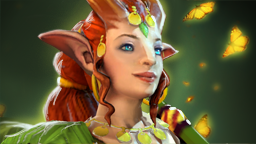

 魅惑魔女
魅惑魔女
背景故事
从外表上看，爱由莎就像是一个天真无忧的森林精灵，尽管的确如此，但这也不是对她最为完整的评价。她对自然所遭受的苦难感同身受。她曾跋山涉水，穿越过斑驳的森林，走过四季变换，结识新的朋友，分享新的见闻，为她所到之处带去自然的治愈和欢乐的笑容。因为在那些饱受战乱折磨的地区，森林被大规模的砍伐，用作造船以及制造攻城车；而即使是在和平地区，也有人因为建造房屋而砍伐森林，为添加灶火而毁坏树木。爱由莎从森林中的小精灵处听闻了这些事情，这些小家伙需要森林的荫蔽来繁衍。她耐心的倾听着那些苦于无法倾诉的人诉说着痛苦，坚信自己的鼓励也是一种魅力，一种能够让未来再次充满绿色的魅之魔力。
不可侵犯 所有直接以魅惑魔女为攻击或施法单位的敌方单位都会被减速。 魔法消耗：0
冷却时间：0
|
魅惑 可以转化幻象。 魔法消耗：65/65/65/6
冷却时间：30.0/24.0/
|
自然之助 召唤一群小精灵治疗魅惑魔女以及身边的友方单位，持续10秒。 不会选择满血单位进行治疗。 魔法消耗：125/140/15
冷却时间：45.0/45.0/
|
推进 激活后每次攻击都有附魔效果，根据与目标的距离造成额外伤害。目标越远，伤害越高。可用神杖升级。 造成伤害上限的距离是1750码。 魔法消耗：55/60/65
冷却时间：0.0/0.0/0.
|